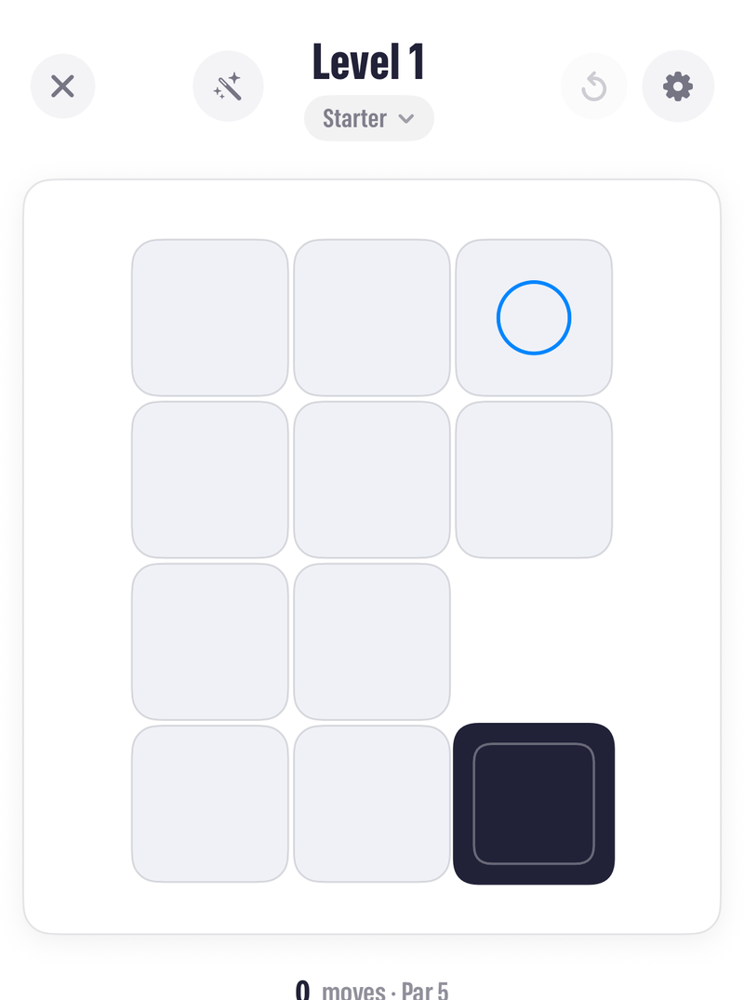
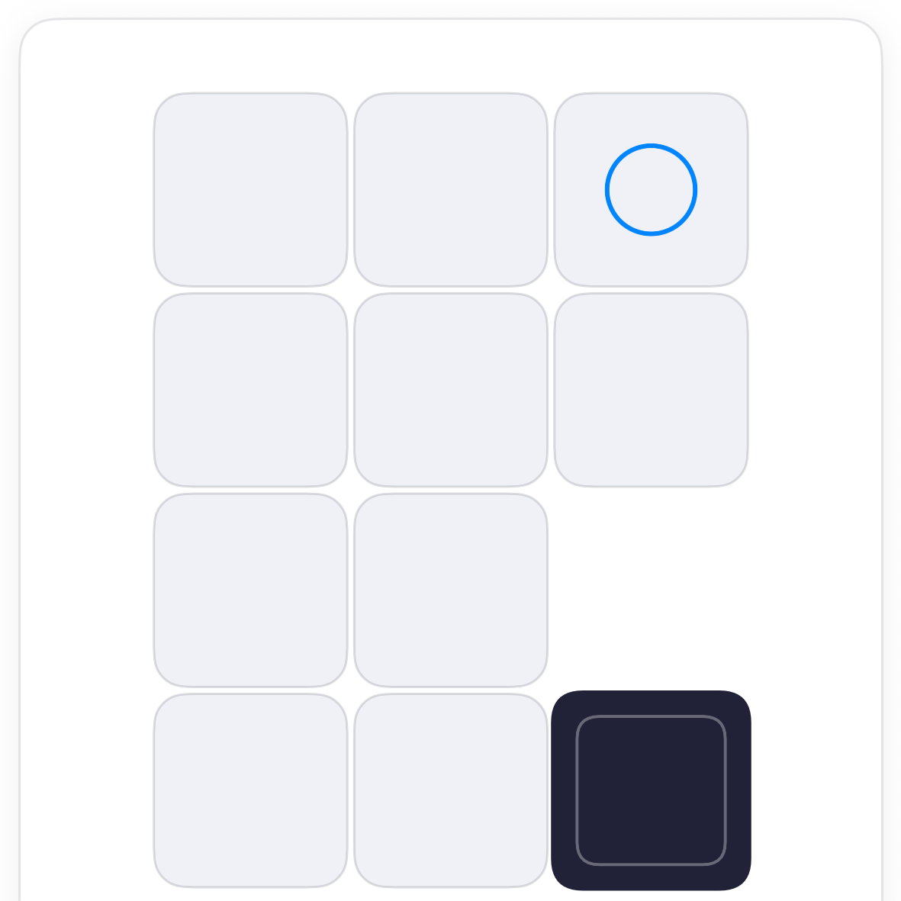
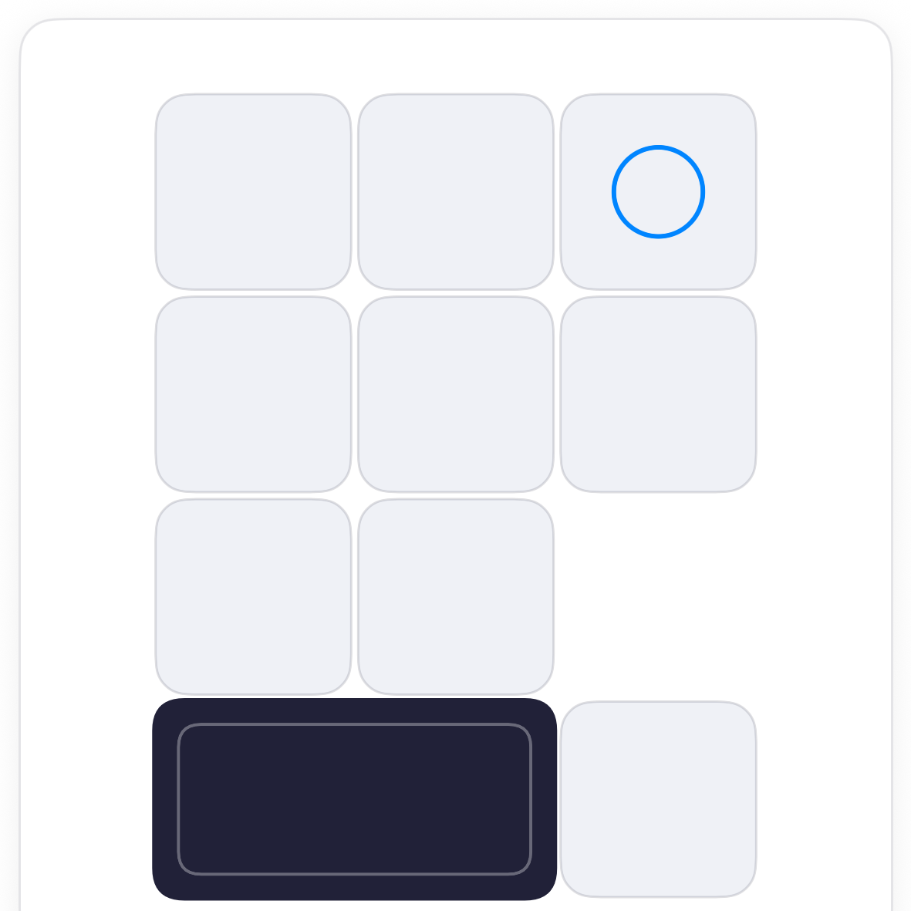
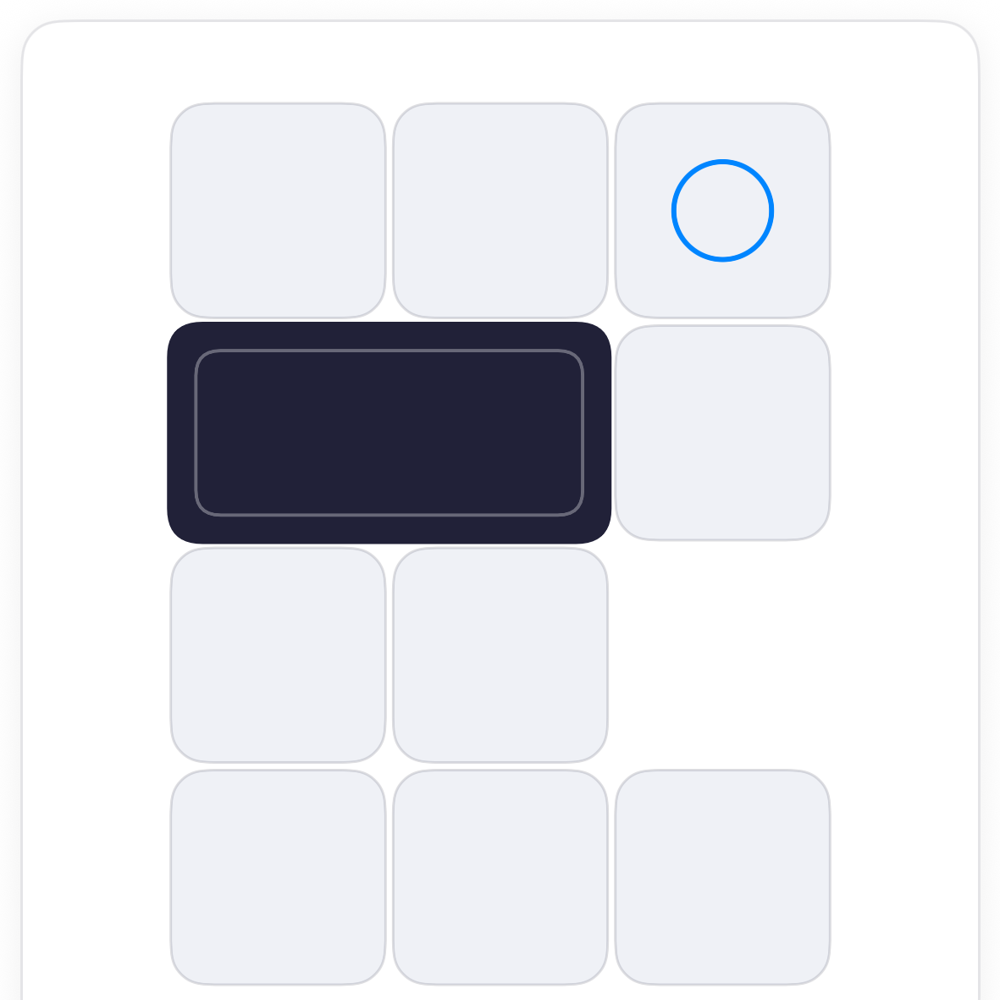
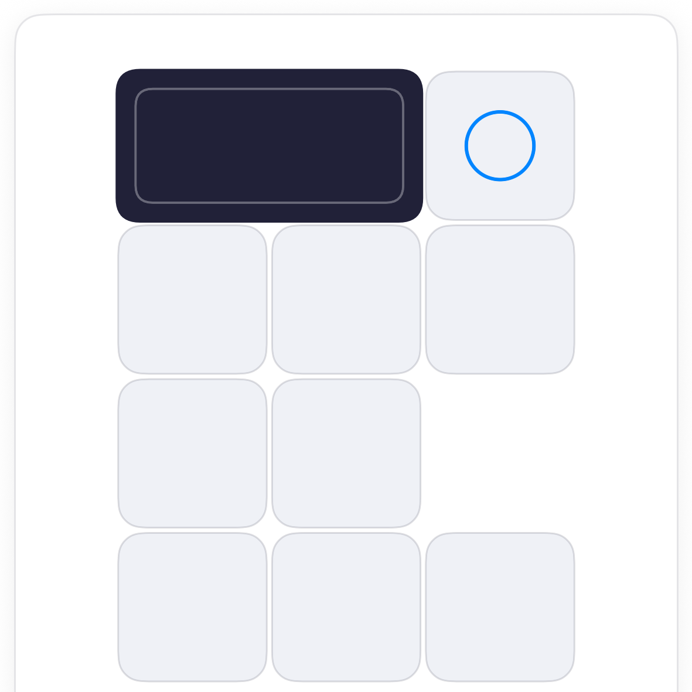

How to play Tumble.
Tumble is a rolling-block puzzle. A tall block stands on a floor of tiles; swipe to tip it end over end, and get it standing on the ring. Tall or flat changes everything, and the floor has holes.
The board.
A floor of tiles with a block standing on one and a ring on another. The block is twice as tall as it is wide, so it stands on one tile or lies flat across two. Anywhere without a tile is a drop.

The rule.
Falls cost nothing but the move. Par is the fewest moves the board can be done in; matching it is the goal, not just arriving.
Tall and flat.
Tipping a standing block lays it flat across two tiles. Tipping a flat block along its length stands it up again two tiles away; tipping it sideways rolls it flat one tile over. Plan in pairs: every stand-up covers two tiles.




Common questions.
Does lying across the ring count?
No. The block has to be standing upright on the ring's tile. Lying half on it does nothing.
What happens if I fall?
The block pops back to the start and the move still counts. No harm done, and undo takes it back if you would rather not spend the move.